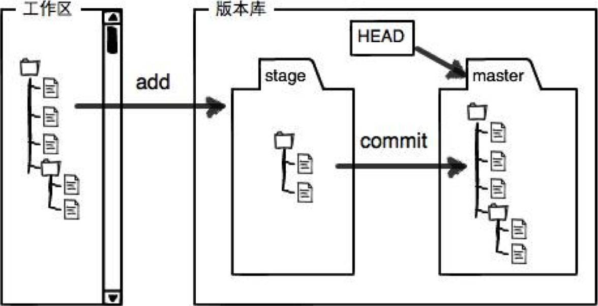

Git基本使用
git是Linux之父，Linus这个牛逼哄哄的大神发明的。本来别人以为，这位大神创建了Linux传奇已是人生巅峰了。而几十年后，这位牛人又创造了一个奇迹。常人难以望其项背。大神之所以成为大神，是因为他生来就是一位大神。
git和SVN的简单对比
速度
- 在很多情况下，git的速度远远比SVN快。
结构
- SVN是集中式管理，git是分布式管理
其他
- SVN使用比较笨拙，git轻松拥有无限个分支。
- SVN必须联网才能工作，git支持本地版本控制。
- 就版本的SVN会在每个目录下放置一个.svn，git只会在根目录下有一个.git。
分布式对别集中式的最大区别是：在分布式下，开发者可以在本地提交，每个开发者机器上都有一个服务器的数据库。
git常用指令
git help: git指令帮助手册
查看其他指令的做法:
git help 其他指令配置用户名:
git config "user.name" 用户名配置邮箱:
git config "user.email" 邮箱查看配置信息: git config -l”
编辑配置信息:
git config -e设置命令别名:
git config alias.别名 原指令名设置带参数的别名:
git config alias.别名 "原指令名称 参数"将此设置应用到整个系统中:
git config --globalgit status: 查看文件状态
git log: 查看文件的修改日志
用一行的方式查看日志信息: git log —pretty=oneline 查看日志配置一个好用的方式
git config —global alias.lg “log —color —graph —pretty=format:‘%Cred%h%Creset –%C(yellow)%d%Creset %s %Cgreen(%cr) %C(bold blue)<%an>%Creset’ —abbrev-commit”
git diff: 查看文件最新改动的状态
git init: 初始化一个空的本地仓库，生成一个.git目录，用于维护版本信息。
- git add: 将工作区的文件保存到暂缓区
保存某个文件到暂缓区：git add 文件名
保存当前路径下的所有文件到暂缓区: git add .
- git commit: 将暂缓区的文件提交到当前分支。
提交某个文件到分支:
git commit -m "注释" 文件名保存当前路径下的所有文件到分支:
git commit -m "注释" - git reset: 版本回退(建议加上—hard参数，git支持无限次后悔)
回退到上一个版本:
git reset --hard HEAD^回退到上上一个版本:
git reset --hard HEAD^^回退到上N个版本:
git reset --hard HEAD~N回退到任意一个版本:
git reset --hard 版本号 - git reflog: 查看指令使用记录（能够查看所有的版本号）
git rm: 删除文件（删除完之后要进行commit操作，才能同步到版本库）
git clone: 下载远程仓库到本地
- git pull: 下载远程仓库的最新信息到本地仓库
- git push: 将本地的仓库信息推送到远程仓库
工作原理
要了解git的工作原理，必须要知道几个核心的概念:
工作区(Working Directory): 仓库文件夹里除.git目录以外的内容
版本库(Repository): .git目录，用于存储记录版本信息
- 暂缓区
- 分支（master）: git自动创建的第一个分支
- HEAD指针: 用于指向当前分支
git add和git commit的原理
git add .: 把文件修改添加到暂存区git commit:: 把暂存区的所有内容提交到当前分支
工作原理图
